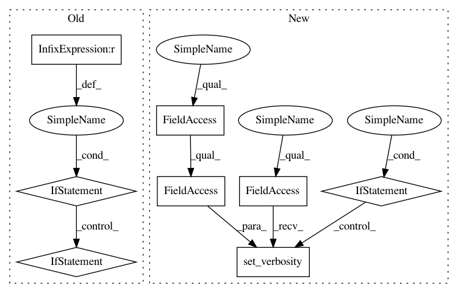

e9524b70faad78477ca9ac924097edd2e0a2a01a,luminoth/eval.py,,evaluate,#Any#Any#Any#Any#Any#Any#Any#Any#,25
Before Change
// TODO: Change parameter to `from_global_step`.
// We only want to filter on the first iteration.
if last_global_step is not None and not all_checkpoints:
checkpoints = [checkpoints[-1]] if checkpoints else []
for checkpoint in checkpoints:
// Always returned in order, so it"s safe to assign directly.
tf.logging.info(
"Evaluating global_step %s using checkpoint \"%s\"",
After Change
override_config = parse_override(override_params)
config = merge_into(override_config, config)
if config.train.debug or config.train.tf_debug:
tf.logging.set_verbosity(tf.logging.DEBUG)
else:
tf.logging.set_verbosity(tf.logging.INFO)
// Build the dataset tensors, overriding the default dataset split.
config.dataset.split = dataset_split
// Only a single run over the dataset to calculate metrics.
config.train.num_epochs = 1
In pattern: SUPERPATTERN
Frequency: 3
Non-data size: 8
Instances
Project Name: tryolabs/luminoth
Commit Name: e9524b70faad78477ca9ac924097edd2e0a2a01a
Time: 2017-08-24
Author: aazzinnari@gmail.com
File Name: luminoth/eval.py
Class Name:
Method Name: evaluate
Project Name: tensorlayer/tensorlayer
Commit Name: 6f539ad2324ddccc18b6ac39e4a2f4aeb12173a2
Time: 2018-04-17
Author: DEKHTIARJonathan@users.noreply.github.com
File Name: tests/test_layers_spatial_transformer.py
Class Name:
Method Name:
Project Name: tensorlayer/tensorlayer
Commit Name: 6f539ad2324ddccc18b6ac39e4a2f4aeb12173a2
Time: 2018-04-17
Author: DEKHTIARJonathan@users.noreply.github.com
File Name: tests/test_layers_normalization.py
Class Name:
Method Name:
Project Name: tryolabs/luminoth
Commit Name: e9524b70faad78477ca9ac924097edd2e0a2a01a
Time: 2017-08-24
Author: aazzinnari@gmail.com
File Name: luminoth/eval.py
Class Name:
Method Name: evaluate